Light-Lock
In the dense urban environments of Switzerland, the bicycle is an indispensable tool for mobility—yet theft and poor visibility remain constant challenges. LightLock addresses these issues by fundamentally rethinking the bicycle pedal as a multi-functional safety device.
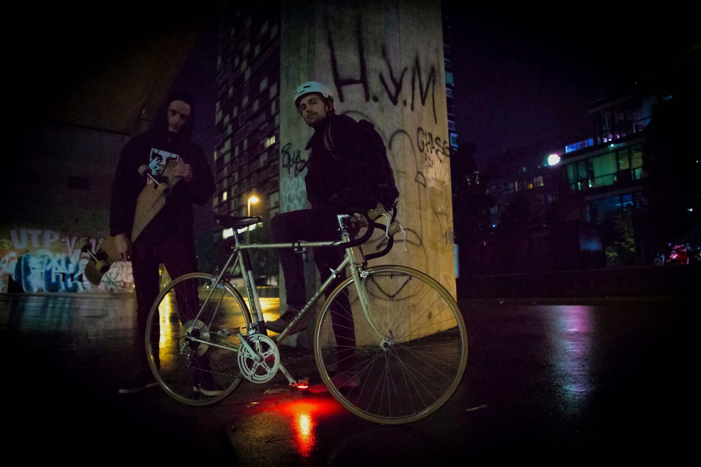
Dynamic Visibility. While riding, the integrated LEDs project a red cone of light onto the ground. This light area moves dynamically with the pedaling motion, significantly increasing the cyclist's visual footprint and safety in traffic.
Integrated Security. When the bike is stationary, the pedal serves as a primary lock. The angled arm is rotated between the wheel spokes and secured, locking the drivetrain and the lighting system simultaneously.
Engineering & Development. Created in 2019 in collaboration with Nicola Borrer, the project focused on the radical optimization of essential bike parts.
Technical Precision. The design process utilized Solidworks and Keyshot, supported by FEM simulations to verify the structural integrity of the pedal and the locking mechanism under mechanical stress.
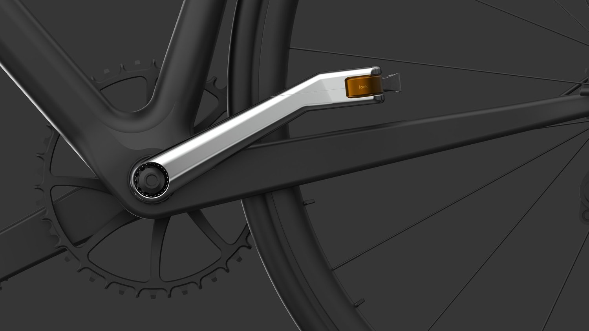
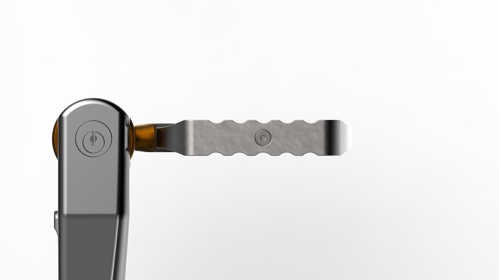
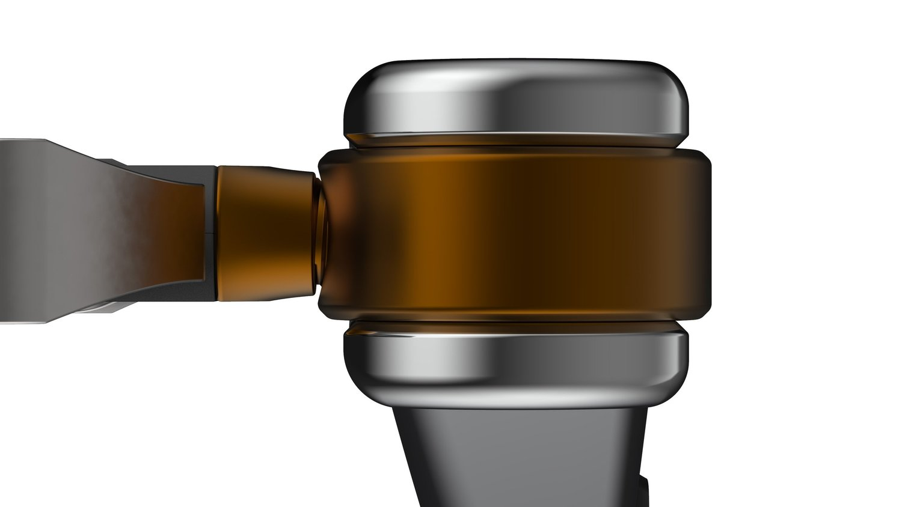
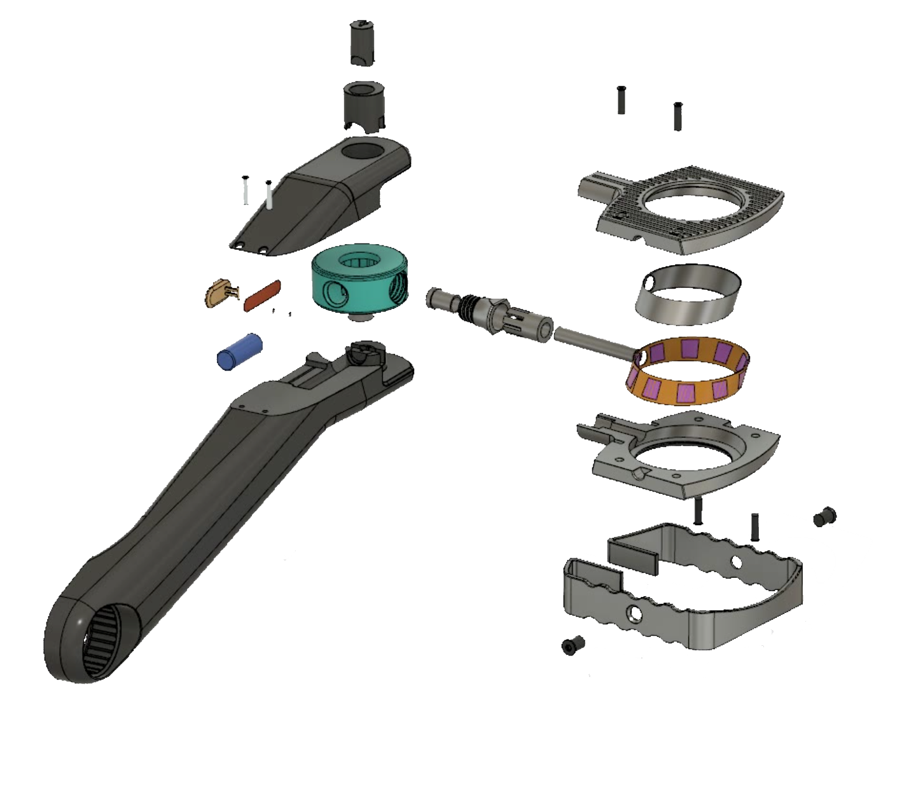
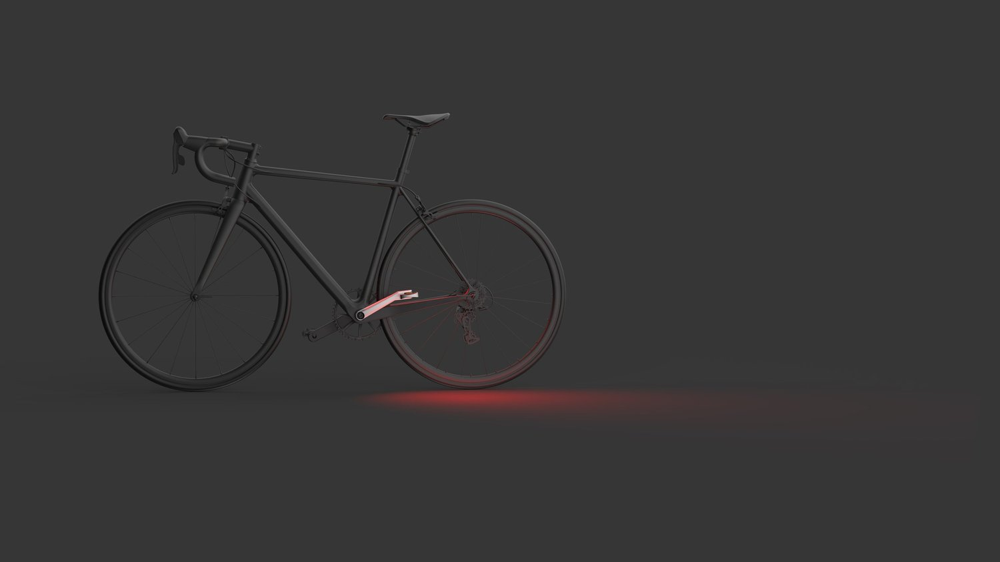
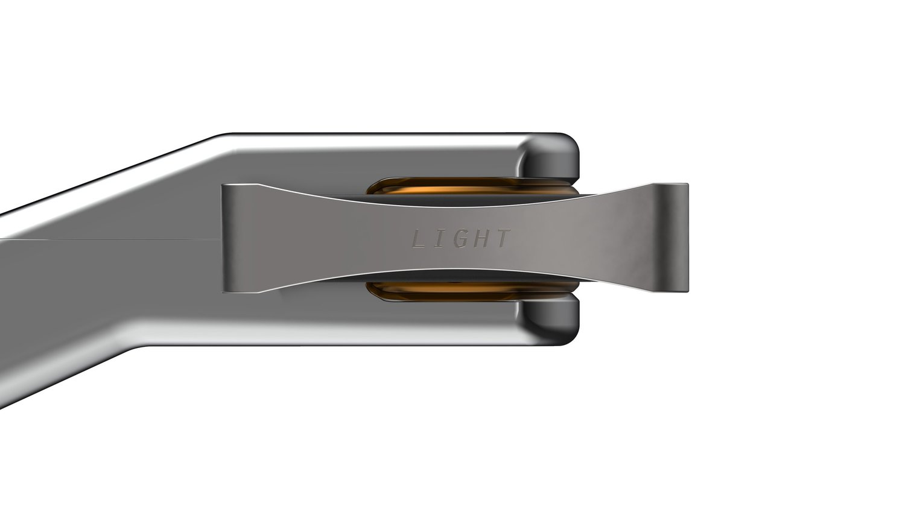
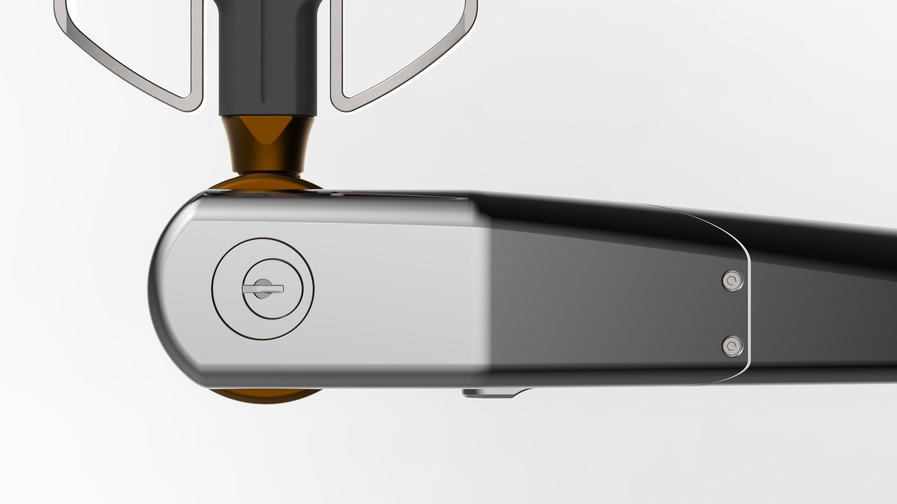
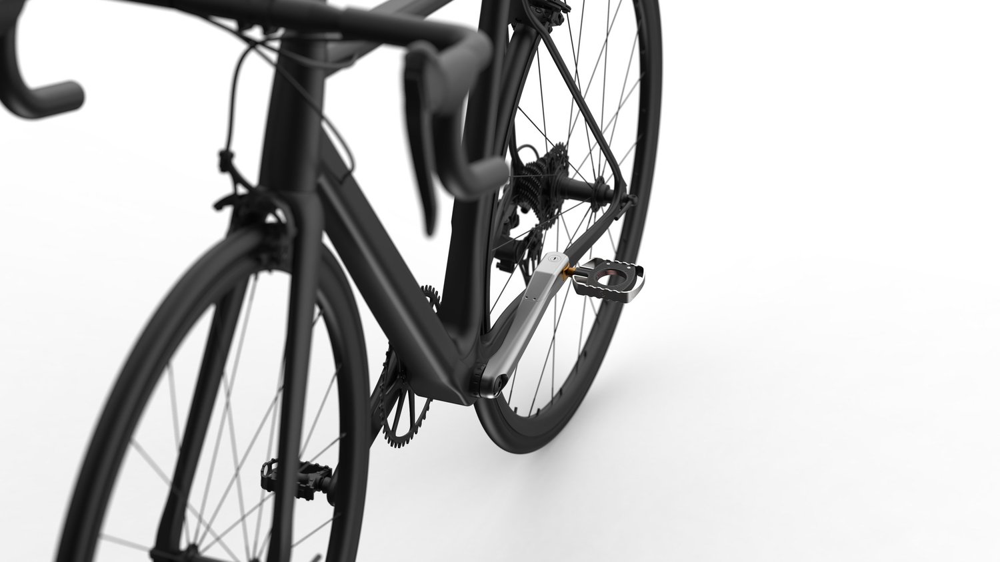
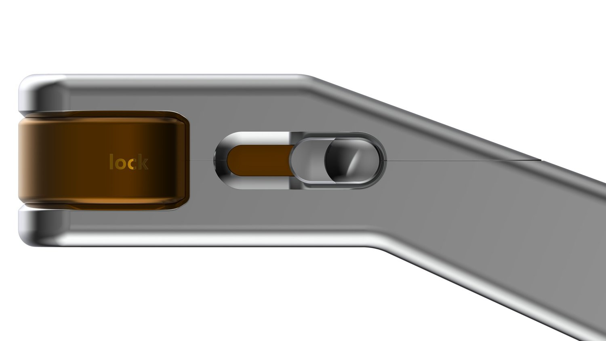
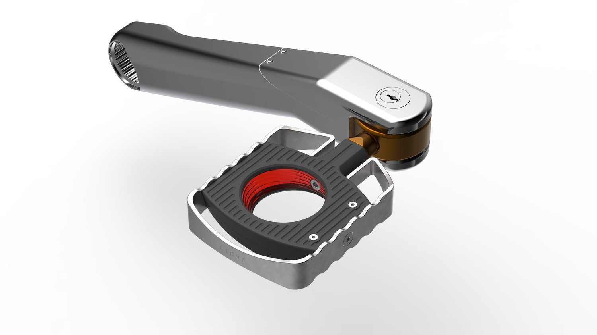